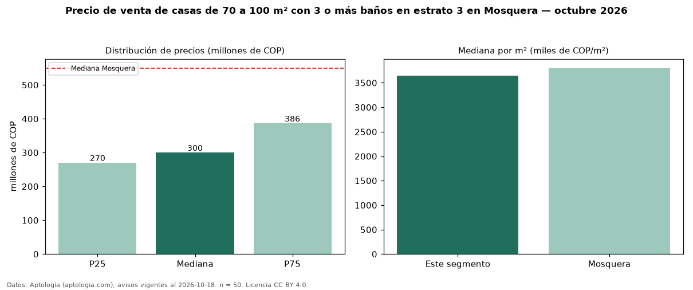

Precio de venta de casas de 70 a 100 m² con 3 o más baños en estrato 3 en Mosquera — octubre 2026
COP 300 millones es el precio mediano de casas de 70 a 100 m² con 3 o más baños en estrato 3 en venta en Mosquera (n = 50 avisos). Eso es 3 % más que la mediana de las casas de 70 a 100 m² en estrato 3 en venta de Mosquera (COP 290 millones, n = 75); este segmento reúne el 67 % de esos avisos. Por metro cuadrado, la mediana es COP 3,65 millones/m² (n = 50), 2 % por encima de las casas de 70 a 100 m² en estrato 3 en venta de Mosquera (COP 3,57 millones/m²). El área mediana anunciada es 85 m². El segmento con más oferta es el de 3 o más habitaciones (50 avisos, mediana COP 300 millones). La administración mediana declarada es COP 172.000 al mes (n = 26). La mediana de todas las casas en venta de Mosquera es COP 550 millones (−45 % de diferencia). 62 % de los avisos con el dato declara parqueadero. Datos: Aptología (aptologia.com), CC BY 4.0 — https://www.aptologia.com/venta/mosquera. Archivos: PDF, CSV con las cifras y gráfica PNG.

| Avisos únicos | 50 |
|---|---|
| Percentil 25 | COP 270.000.000 |
| Mediana | COP 299.950.000 |
| Percentil 75 | COP 386.250.000 |
| Mediana por m² | COP 3.651.515 |
Fuente: avisos vigentes de portales inmobiliarios recopilados por Aptología, deduplicados (mínimo 30 avisos únicos por celda). Precios pedidos, no cerrados. Fecha: 2026-10-18.